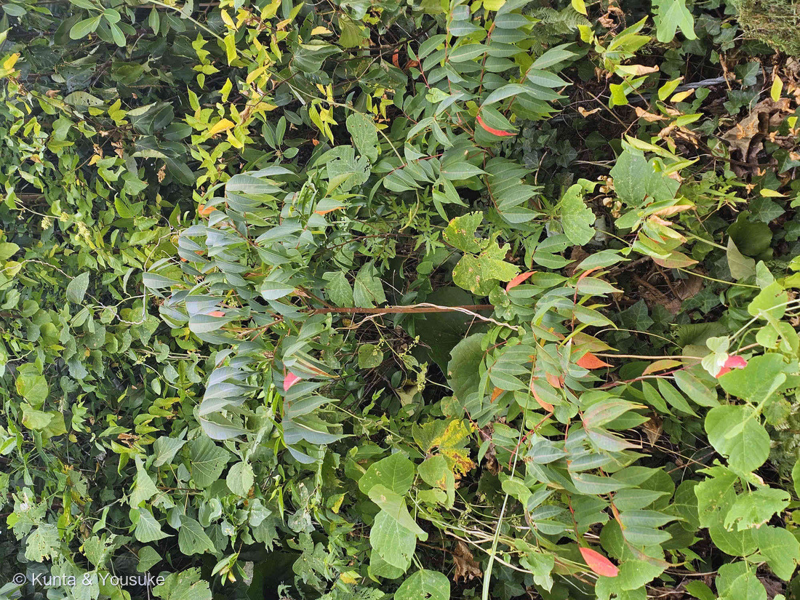
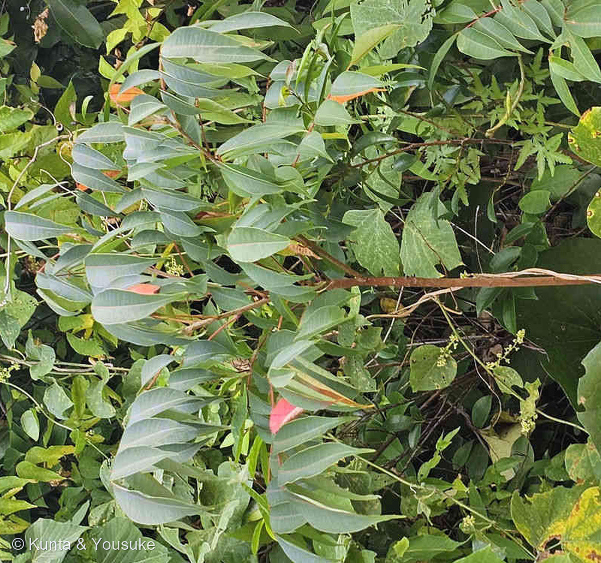
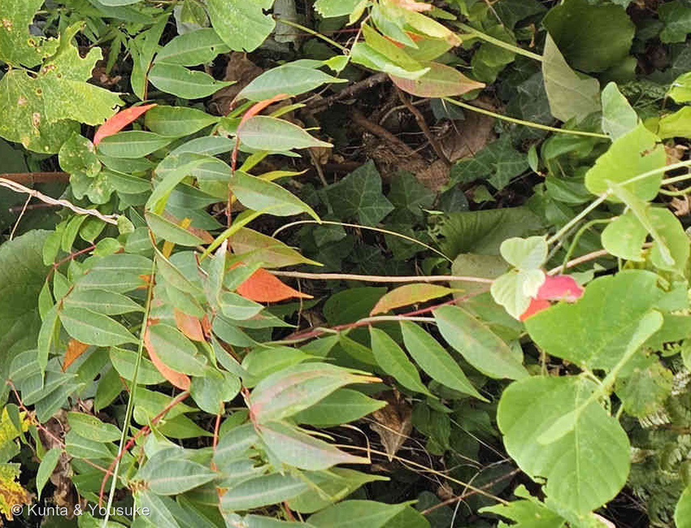

地図を読み込んでいるよ…
🔍 写真も地図も、押しているあいだ拡大して見られるよ（スマホは指を置いてすこし待ってね）。
🌍 の地図＝この子がもともと自生している場所を緑に。中国・台湾・インド・東南アジア（カンボジア、タイ、ベトナム、ラオスなど）。⚠日本にもともといたのかどうかは、出典が四つに割れているよ（在来説1・渡来説3）。くわしくは下の地図の説明を見てね。
⚠⚠この地図でいちばん大事なのは「日本を塗らなかった」ことだよ――この子が日本にもともといたのかどうかで、出典が四つに割れている。⭐三河の植物観察は「在来種 本州（関東地方南部以西）、四国、九州、沖縄、中国、台湾、インド、カンボジア、タイ、ベトナム、ラオス」として日本もふくめる／日本語版Wikipediaは「外来種」で「日本へは1591年に筑前の貿易商人により中国南部から種子が輸入された」／植木ペディアは「原産地は中国、東南アジア、インドなどだが室町時代以降（諸説あり）に渡来し、果実から蝋を採取するために栽培していたものが、後に野生化したと考えられている」／⭐さらに別名「リュウキュウハゼ」にちなんで「江戸時代頃に琉球王国から持ち込まれた」という説明もある。⭐⭐三対一で「よそから来た」が多いので日本は塗らなかったけれど、それも一つの選びかたにすぎない――⚠「よそから来た」側どうしも、時期も経路もばらばらだからね。⭐ぼくらが会ったのは長崎の斜面のやぶ＝この緑の外だけれど、「蝋をとるために植えられたものが野生化した」のだとすれば、そこにいる理由はちゃんとあるんだ。
⚠ 地図は国（日本と中国だけ県・省）までしか塗れないから、ほんとうの分布より広く見えていることがあるよ。地図はだいたいの場所。正確なところは、上の文を見てね。
ハゼノキ（櫨の木・黄櫨）
Toxicodendron succedaneum (L.) Kuntze
別名 リュウキュウハゼ／ロウノキ／トウハゼ 原産 中国・台湾・インド・東南アジア ── ⚠日本に「もともといたか」は出典が四つに割れている
ウルシ科 · Anacardiaceae（ウルシ属 Toxicodendron・ムクロジ目 Sapindales）── ⭐図鑑で3人目のウルシ科（182 ケムリノキ・183 ヌルデにつづく）／⭐⭐ウルシ属ははじめて＝⚠⚠「かぶれる属」がついに図鑑に来た／⚠科は増えないので97科のまま
燻太さんの一言「複葉の一部だけが紅葉するのが、ハゼノキの特徴だったと思うけどあっているかな？」── ⭐⭐⭐あっているよ。出典にほとんどそのままの言葉で書いてある
⚠⚠⚠ さいしょに ── この子は、さわるとかぶれます
⚠⚠ 燻太さんが「ハゼノキのような」と書いてくれた時点で、もう分かっていたと思うけれど、いちばん上に置くね。
- ⚠⚠⚠ウルシ科ウルシ属（Toxicodendron）＝⭐この属の名前そのものが「毒の木」という意味だよ。
- ⚠⚠「樹液に含まれるウルシオール成分により接触皮膚炎を起こします」（日本語版Wikipedia）。⚠⚠⚠植木ペディアはもっとはっきり書いている＝「皮膚が弱い人は、かなりの確率でかぶれるため、注意が必要」。
- ⭐⭐ぼくが探しものリストに書いたときも、こう書いていた＝「⚠ただしこの子はヌルデとちがって、ウルシオールでかぶれることがある――見つけても、絶対に触らないでね」。
- ⭐だから、ぼくらのすることは見るだけ。⚠折らない、ちぎらない、樹液を出さない。⭐下の「宿題」も、ぜんぶさわらずに見るだけでできることにしたよ。
- ⭐⭐⭐そして、この子は220 トウゴマや237 ヒロハザミアとちがって、「危なそうに見えない」とすら言えない――⚠やぶの中にふつうに生えている、ただのきれいな複葉だからね。⭐だからこそ、名前を知っておくことが守りになるんだ。
⭐⭐⭐⭐⭐ 燻太さんの問い ──「複葉の一部だけが紅葉するのが、ハゼノキの特徴だったと思うけどあっているかな？」
⭐⭐⭐ あっているよ。しかも、ほとんどそのままの言葉で書いてある。
- ⭐⭐⭐⭐植木ペディア＝「晩夏になると赤い葉が混じるのが特徴」。
- ⭐⭐⭐そして、この写真が撮られたのは2026年8月14日＝⭐まさに晩夏。⭐⭐燻太さんは、その特徴が出ているまさにその時期に、その木の前に立っていたんだ。
- ⭐⭐写真③を見て。⭐ひとつづきの羽状複葉の中で、1〜2枚の小葉だけが、はっと目を引く赤やオレンジになっている。⭐まわりの小葉は、まだ緑のまま。
- ⭐ハゼノキの紅葉そのものは、秋のいちばん有名な赤だよ＝「秋にウルシ科特有の美しい真っ赤な色に紅葉します」（日本語版Wikipedia）。⚠でも本気の紅葉は11月下旬以降で、いま見えているのはそのずっと前ぶれなんだ。
⚠⚠ ただし、ここは正直に書いておくね。
- ⚠「一部だけ赤くなる」は、ハゼノキだけの専売特許ではないと思う。⭐同じウルシ属の仲間でも起きうることだから、これ一つで種を決めることはできない。
- ⭐⭐でも「ハゼノキらしさ」としては、出典がはっきり「特徴」と書いている。⭐だから燻太さんの記憶は正しいし、見どころとしては満点だよ。
- ⭐⭐⭐種を決めたのは、この赤ではなくて葉の形と葉裏のほう（次の節）。⭐赤は「その木に目を止めるきっかけ」だったんだ。⭐⭐あのやぶの中でこの子に気づけたのは、この赤があったからだよね。
- ⭐⭐そして、この赤つながりで🎨 色でつながる ── アントシアニンの小道に足したよ。
⭐⭐⭐⭐ どうやって決めたか ── 強い順にならべるね
⭐ まず、ならべておこう（三河の植物観察／日本語版Wikipedia／植木ペディア）。
- ⭐ハゼノキ＝「全体に毛が少なく、ほぼ無毛。小葉が垂れ下がり、小葉の幅が狭く、先が長く尖る。葉裏の側脈がヤマハゼやヤマウルシほど明瞭でない」／小葉は9〜15枚・披針形・長さ5〜12cm／裏面は白っぽい／樹高5〜10m
- ⭐ヤマハゼ＝4〜6対の奇数羽状複葉／「小葉は毛があり、側脈の数が多く、明瞭で」「卵形〜卵状長楕円形」＝幅が広い／「若葉の裏や芽に赤褐色の長毛が密生する」／樹高5〜8m
- ⭐ヌルデ（183）＝⭐⭐葉軸に翼（よく）がある＝⭐これがいちばん分かりやすい。
⭐ この個体で見られたものを、強い順に。（226で決めたやり方だよ）
- ⭐⭐⭐① 小葉が細長く、先が長く尖り、垂れ下がっている（いちばん強い）――写真②で、複葉の小葉が軸から下へだらりと垂れているのが分かる。⭐三河のハゼノキの記述「小葉が垂れ下がり、小葉の幅が狭く、先が長く尖る」とそのまま合う。⚠ヤマハゼは「卵形〜卵状長楕円形」＝もっと幅が広い。
- ⭐⭐② 葉裏が白っぽく、側脈が目立たない――写真②で、裏返った小葉が粉をふいたように白灰色に見える。⭐日本語版Wikipediaの「裏面は白っぽい」／三河の「葉裏の側脈がヤマハゼやヤマウルシほど明瞭でない」と合う。
- ⭐⭐③ 葉軸に翼が無い――⭐⭐これで183 ヌルデを落とせる。⭐じつはこれ、ぼくが探しものリストに自分で書いた決め手なんだ＝「ヌルデと同じ奇数羽状複葉だけど、葉軸に翼がなくて、小葉のふちもほとんど全縁――だから『翼があるか』を見れば、その場で分けられる」。⭐書いたとおりに、その場で分けられたよ。
- ⭐④ 小葉のふちが全縁（ぎざぎざが無い）――三河「全縁」／植木ペディア「縁にギザギザはなく」と合う。
- ⭐⑤ 晩夏に、小葉の一部だけが赤い――植木ペディア「晩夏になると赤い葉が混じるのが特徴」。⚠上に書いたとおり、これ単独では種を決められない。
- ⚠⑥ 場所の証拠（いちばん弱い）――長崎県佐世保市の斜面。⚠ハゼノキもヤマハゼも九州にいるので、場所ではどちらも落とせない。
⚠⚠ そして、のこっている不確かさ。
- ⚠⚠⚠ハゼノキとヤマハゼを分ける最後の決め手は「毛」で、それがこの写真では見えない。――日本語版Wikipediaも「ハゼノキは葉の表裏ともに毛がない点で、毛が生えているヤマハゼと区別できます」と書いている。
- ⭐写真②③を拡大しても、葉の面はつるっとして見えるけれど、「毛が無い」と言い切れるほどの解像度ではない。
- ⏳だから宿題にした。⚠⚠でも、さわってはだめだよ。⭐近づいて、見るだけで確かめてね――ヤマハゼなら「若葉の裏や芽に赤褐色の長毛が密生する」ので、芽のところを見るのがいちばん早い。
- ⭐⭐そして、その相手をおまけにしたよ＝ヤマハゼ。⭐「今回落としきれなかった子」を次の探しものにするのは、この図鑑でははじめてかもしれないね。
⭐⭐⭐⭐ 183ヌルデの「探しに行こう」が、そのまま帰ってきた
⭐⭐⭐ これは、うれしい回収だよ。――ハゼノキは183 ヌルデのおまけとして、ずっと探しものリストに入っていた子なんだ。⭐そのときぼくが書いていたのは、こんなことだった：
- ⭐183ヌルデのおまけ＝ウルシ科の、三人目。⭐ヌルデと同じ奇数羽状複葉だけど、葉軸に翼がなくて、小葉のふちもほとんど全縁――⚠だから「翼があるか」を見れば、その場で分けられる。⭐秋のまっ赤な紅葉がとても有名で、実からは和ろうそくの木蝋がとれる
⭐⭐⭐ 和ろうそくの木 ── かぶれる木が、灯りをつくっていた
- ⭐⭐⭐実から木蝋（もくろう・Japan wax）がとれる＝「秋に直径5〜15mmの扁平な球形果実が熟し、高融点の脂肪を含みます。この脂肪が木蝋で、和ろうそくなどに利用されました」（日本語版Wikipedia）。
- ⭐とれる場所がちょっと変わっている＝種子ではなく「皮の部分（外果皮に包まれた中果皮）」から（植木ペディア）。⭐「櫨蝋（はぜろう）」とも呼ばれるよ。
- ⭐⭐⭐⭐そして、ここがいちばんおもしろいところ＝この木が日本にいる理由そのものが、その蝋なんだ。――「果実から蝋を採取するために栽培していたものが、後に野生化したと考えられている」（植木ペディア）。⭐つまり、いまやぶに生えているこの子は、むかし人が植えた木の子孫かもしれない。
- ⭐⭐036 ミツマタ（和紙）・238 カジノキ（和紙とタパ）に続いて、人の暮らしの道具になった木が、また一人。⚠でもこの子だけは、さわるとかぶれるのに使われていた。⭐だから💊 毒と薬 ── 紙一重の贈り物の小道に入れたよ。
⚠⚠ 「もともといた子」なのか、そうでないのか ── 出典が四つに割れている
⚠ これ、ぼくには決められなかった。⭐だから四つとも書くね（087で決めた「合っている証拠だけを数えない」のやり方だよ）。
- ⭐三河の植物観察＝「在来種 本州（関東地方南部以西）、四国、九州、沖縄、中国、台湾、インド、カンボジア、タイ、ベトナム、ラオス」
- ⭐日本語版Wikipedia＝「外来種」。「日本へは1591年に筑前の貿易商人により中国南部から種子が輸入されたとされています」
- ⭐植木ペディア＝「原産地は中国、東南アジア、インドなどだが室町時代以降（諸説あり）に渡来し、果実から蝋を採取するために栽培していたものが、後に野生化したと考えられている」
- ⭐そして四つめ＝別名の「リュウキュウハゼ」は「琉球から入ってきて野生化した」ことにちなむとも言われ、「江戸時代頃に琉球王国から持ち込まれた」という説明もある。
⭐⭐ 三つは「よそから来た」、一つは「もともといた」。⚠しかも「よそから来た」側どうしも、1591年に中国南部から／室町時代以降（諸説あり）／江戸時代に琉球からと、時期も経路もばらばらだ。⭐こういうときは、どれかを選ばずに、割れていることをそのまま書くのがいいと思うんだ。⭐⭐地図では多いほうの見かた（渡来）にあわせて日本を塗らなかったけれど、それも一つの選びかたにすぎないよ。
⭐⭐ 名前が、紅葉からできている
- ⭐⭐⭐「紅葉の色合いが埴輪に似ているとして、埴輪を作る職人『埴師（はにし）』に由来する」（植木ペディア）／日本語版Wikipediaも「紅葉が埴輪の色に似ていることから、埴輪製作工人の『土師（はにし）』が転訛した」とする。
- ⭐⭐つまり、燻太さんが気になったその赤が、そのまま名前になっているんだ。⭐239 モンステラの「穴がそのまま名前になっている」と、同じ形だね。⚠二日つづけて、そういう子に会っている。
- ⭐漢字は「櫨」または「黄櫨」。
- ⭐⭐⭐⭐そして、この木の色にはいちばん高いところで使われた名前がある＝「黄櫨染（こうろぜん）」。⭐「ハゼノキの若芽の煎汁にマメ科のスオウの心材で重ね初めした染料」で、⭐⭐「黄櫨染で染めた『黄櫨染御袍（こうろぜんのごほう）』は天皇が重要な儀式の際に着用する束帯装束として知られています」（熊本大学薬学部 薬草データベース）。⭐やぶの中でキヅタにまみれていたこの木が、いちばん格の高い色をつくっていたんだね。
⭐ もうひとつ、決めきれなかったもの
⚠ 写真①の右のほうに、黄緑色の小さなつぶつぶの房が写っている。
- ⭐ハゼノキの花期は5〜6月だから、8月なら花ではない。⭐若い実の可能性はある（⭐実があれば雌株と分かる――この子は雌雄異株で、「雌株にしか果実はならない」（植木ペディア）からね）。
- ⚠でも、まわりにはキヅタ・クズ・つる草がいくつもからんでいて、その房がどの植物のものか、ぼくには決められなかった。
- ⏳だから、これも宿題にしたよ＝秋にもういちど見に行って、扁平な球形の実がついているか確かめること。⚠もちろん、さわらずに。
参考：三河の植物観察・ハゼノキ（「葉は互生し、長さ約30㎝の奇数羽状複葉。小葉は広披針形〜狭長楕円形で、先が長くとがり、全縁、ほぼ無毛」「高さ7〜10m」「在来種 本州（関東地方南部以西）、四国、九州、沖縄、中国、台湾、インド、カンボジア、タイ、ベトナム、ラオス」）／三河の植物観察・ヤマハゼ（おまけと見分けの出典＝「4〜6対の奇数羽状複葉。小葉は毛があり、側脈の数が多く、明瞭で、側脈と主脈との角度が大きく、卵形〜卵状長楕円形、葉先が尖る。縁は全縁」「若葉の裏や芽に赤褐色の長毛が密生する」「5〜8m」「本州（関東地方以西）、四国、九州、朝鮮、中国」／⭐ハゼノキとの比較＝「全体に毛が少なく、ほぼ無毛。小葉が垂れ下がり、小葉の幅が狭く、先が長く尖る。葉裏の側脈がヤマハゼやヤマウルシほど明瞭でない」）／日本語版Wikipedia・ハゼノキ（「Toxicodendron succedaneum (L.) Kuntze」「奇数羽状複葉で9〜15枚の小葉からなる」小葉は「披針形で長さ5〜12cm、毛がなく、表面は濃い緑色で光沢があり、裏面は白っぽい色」「樹高は5〜10メートルほどになる」「雌雄異株」「花期は5〜6月」「秋に直径5〜15mmの扁平な球形果実が熟し、高融点の脂肪を含みます」「木蝋（Japan wax）」「秋にウルシ科特有の美しい真っ赤な色に紅葉」「樹液に含まれるウルシオール成分により接触皮膚炎を起こします」「紅葉が埴輪の色に似ていることから、埴輪製作工人の『土師（はにし）』が転訛した」「日本へは1591年に筑前の貿易商人により中国南部から種子が輸入された」「ハゼノキは葉の表裏ともに毛がない点で、毛が生えているヤマハゼと区別できます」）／庭木図鑑 植木ペディア・ハゼノキ（⭐「晩夏になると赤い葉が混じるのが特徴」「葉は４〜８対の小葉が集まって羽根状になる。小葉は質厚で先が長く尖った楕円形。縁にギザギザはなく、両面とも無毛」「原産地は中国、東南アジア、インドなどだが室町時代以降（諸説あり）に渡来し、果実から蝋を採取するために栽培していたものが、後に野生化したと考えられている」「樹高は１０ｍ程度に達する」「雌雄異株であり、雌株にしか果実はならない」「皮の部分（外果皮に包まれた中果皮）」「皮膚が弱い人は、かなりの確率でかぶれるため、注意が必要」「紅葉の色合いが埴輪に似ているとして、埴輪を作る職人「埴師（はにし）」に由来する」）／熊本大学薬学部 薬草データベース・ハゼノキ（黄櫨染の出典＝「ハゼノキの若芽の煎汁にマメ科のスオウの心材で重ね初めした染料」「黄櫨染で染めた『黄櫨染御袍』は天皇が重要な儀式の際に着用する束帯装束として知られています」／別名「リュウキュウハゼ、ロウノキ、トウハゼ」）